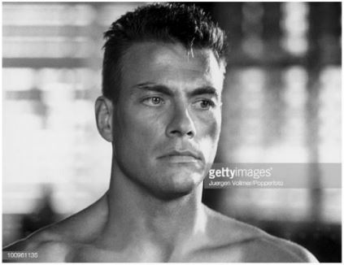

JCVD
Je ne voudrais pas rentrer dans des choses trop dimensionnelles, mais, là on voit qu'on a beaucoup à travailler sur nous-mêmes car on vit dans une réalité qu'on a créée et que j'appelle illusion et c'est très, très beau d'avoir son propre moi-même ! Mais ça, c'est uniquement lié au spirit.
Quand tu fais le calcul, tu vois au passage qu'il n'y a rien de concret car il faut toute la splendeur du aware et finalement tout refaire depuis le début. C'est pour ça que j'ai fait des films avec des replicants.
Oui alors écoute moi, tu vois au passage qu'il n'y a rien de concret car on est tous capables de donner des informations à chacun parce que spirituellement, on est tous ensemble, ok ? Et j'ai toujours grandi parmi les chiens.
Retour en haut